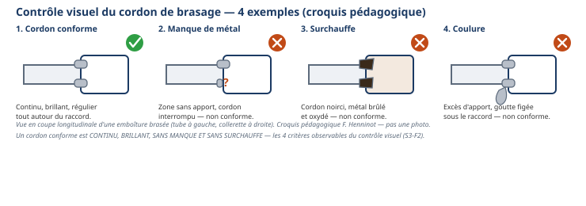

Ordre d'intervention n° OI-S3-2 : vous avez préparé et contrôlé l'étanchéité de la liaison
frigorifique du pavillon du client (module S3-F1). Le client attend maintenant l'assemblage
DÉFINITIF de cette liaison : les raccords démontables (dudgeon + écrou) utilisés jusqu'ici ne suffisent
plus. Il faut braser. C'est le premier geste d'assemblage définitif de votre année : une fois
brasé, un tube ne se démonte plus comme un dudgeon. La flamme ne se découvre pas seul(e), elle se
démontre : le professeur commence toujours par une démonstration commentée, avant toute prise en main.
Ce module se vit deux fois : passage 1 en semaine 10 (premiers gestes, sur établi, en position
confortable) et passage 2 en semaine 11 (l'exercice complet demandé par le client : 3 emboîtures
cotées, brasées, contrôlées).
Tâches
T10 Repérer, raccorder, assembler les réseaux fluidiques, aérauliques et électriques T12 Respecter les consignes de sécurité et protéger la zone de travail
Savoirs
Prérequis : gestes cuivre (S1-S2), étanchéité à l'eau savonneuse (S3-F1) S6.2 Principaux risques et moyens de prévention augmenté
Savoir-être
Rigueur face à un risque nouveau (la flamme) · respect absolu des gestes interdits · honnêteté du contrôle avant brasage
Ce qui change depuis S2 — En S2, tous vos assemblages étaient
mécaniques et démontables (dudgeon + écrou) : une pièce ratée se refaisait sur un tube neuf, sans
conséquence grave. Aujourd'hui, l'assemblage devient DÉFINITIF : un brasage ne se « redéfait » pas
comme un dudgeon — votre marge d'erreur est plus faible, votre vigilance doit monter d'un cran. Autre
changement important : en S2, vous ne travailliez jamais avec une flamme. À partir d'aujourd'hui, de
nouveaux gestes interdits et une nouvelle procédure d'urgence s'ajoutent à tout ce que vous savez déjà sur la
sécurité. Statut des deux compétences : Confortement — S3 ne comporte aucune Évaluation remontée
(celle-ci, É2, aura lieu plus tard, en S4). É1 est passée : vos 2 objectifs de progrès s'appliquent ici
aussi.
Passage 1 / Passage 2 — ce qui change
Passage 1 (semaine 10) — emboîtures + premiers brasages, sur établi, position confortable : après la
démonstration commentée du professeur, vous réalisez une emboîture d'essai sur une chute de tube, à
votre établi, puis vous la brasez pour la première fois, à un poste de brasage en rotation. Le
professeur reste présent à chaque allumage. Passage 2 (semaine 11) — l'exercice complet du client, en autonomie guidée : sur un tube neuf de
450 mm, vous réalisez 3 emboîtures aux cotes demandées (350 mm ± 2 mm), que vous
montrez au professeur AVANT tout brasage — c'est une obligation, pas une option. Vous brasez ensuite
les 3 emboîtures et vous contrôlez visuellement chaque cordon (continu, brillant, sans manque, sans
surchauffe). Moins d'aide qu'au passage 1, plus d'autonomie : c'est la pièce que le client attend
réellement.
Objectifs — je serai capable de…
réaliser une emboîture conforme à la cote demandée, en respectant sa tolérance (± 2 mm) ;
définir le brasage tendre (métal d'apport qui fond sous 450 °C) et le distinguer du brasage
fort, sans en connaître encore la valeur exacte ;
respecter la procédure de sécurité renforcée face à la flamme : EPI, gestes interdits,
extincteur localisé ;
montrer mes emboîtures au professeur AVANT de braser — c'est un point de contrôle obligatoire,
jamais une option ;
réaliser un brasage et contrôler visuellement mon cordon : continu, brillant, sans manque, sans
surchauffe.
Prérequis — je sais déjà…
Ce n'est pas votre première séance de travail du cuivre : vous savez déjà
couper, ébavurer, cintrer et dudgeonner un tube (S1-S2), et vous savez contrôler l'étanchéité
d'un circuit à l'eau savonneuse, appris la semaine dernière en S3-F1. Vous savez lire une cote avec sa
tolérance (± mm) et vous portez vos EPI sans qu'on ait besoin de vous le rappeler. Ce qui est nouveau
aujourd'hui, c'est le geste d'emboîture (préparer deux tronçons de même diamètre pour qu'ils
s'emboîtent l'un dans l'autre) et bien sûr, la flamme.
couper, ébavurer, cintrer, dudgeonner un tube cuivre (S1-S2) ;
contrôler l'étanchéité d'un circuit à l'eau savonneuse (S3-F1) ;
lire et respecter une cote donnée avec sa tolérance ;
porter les EPI et sécuriser une zone de travail sans rappel.
Si un prérequis vous échappe encore,
signalez-le au professeur pendant l'exercice au fil de l'eau (phase 4), avant que la démonstration ne
commence.
Matériel
Tube cuivre 14 × 1, plusieurs longueurs (chutes pour l'essai, un tube neuf de 450 mm pour l'exercice
du client) — selon le stock de l'atelier, à faire valider par le professeur
Poste de brasage (chalumeau, gaz) — consommable, type et réglage selon
l'équipement de l'atelier
Métal d'apport (baguette de brasage tendre) (consommable) — selon la
notice du produit utilisé à l'atelier, à faire valider par le professeur
Flux décapant (consommable) — selon la notice du produit utilisé à
l'atelier, à faire valider par le professeur
Toile abrasive ou brosse métallique (décapage mécanique avant brasage)
Outil d'expansion (pince à emboîture), adapté au diamètre 14 mm
Mètre ou réglet + feutre marqueur (traçage des cotes)
Support ou pince pour maintenir le tube pendant le brasage
Gants anti-chaleur (× 1 paire par élève, obligatoires)
Lunettes de protection (× 1 par élève, obligatoires)
Extincteur localisé au poste de brasage (vérifié en phase 5)
Le brasage TENDRE est un procédé d'assemblage qui utilise un métal
d'apport dont la température de fusion est inférieure à 450 °C (définition normalisée). Le métal
d'apport fond sans faire fondre le cuivre du tube : il vient remplir l'espace entre les deux tronçons
emboîtés, par capillarité (il est « aspiré » dans le petit espace laissé entre les deux tubes). Il existe un
autre procédé, le brasage FORT (ou soudo-brasage), qui utilise une température plus élevée — vous ne
l'utilisez pas aujourd'hui, et sa valeur exacte sera vue plus tard dans votre formation. L'alliage exact du
métal d'apport, le type de flux décapant et le matériel de brasage utilisés à l'atelier dépendent de la
notice du produit réellement en service : ce n'est pas à vous de les deviner, le professeur vous les
précisera.
Question — Avec vos propres mots, expliquez pourquoi on appelle ce
procédé « brasage tendre » plutôt que « brasage fort ». Qu'est-ce qui les distingue ?
Sécurité renforcée — la flamme arrive
Jusqu'ici, vous n'avez jamais travaillé avec une flamme. Aujourd'hui, de
nouveaux risques apparaissent : ils ne s'apprennent pas en tâtonnant, le professeur vous les démontre
avant toute prise en main.
Risque
Parade
Brûlure par un tube fraîchement brasé
Le tube reste chaud LONGTEMPS après l'extinction de la flamme, bien plus longtemps qu'il n'y paraît. Gants anti-chaleur obligatoires ; ne jamais toucher un tube qui vient d'être brasé à main nue.
Brûlure ou projection par la flamme elle-même
Lunettes de protection obligatoires pendant tout allumage. Ne jamais approcher son visage ou ses mains de la flamme.
Incendie (matériau inflammable à proximité de la flamme)
Poste de brasage dégagé de tout inflammable ; extincteur localisé et vérifié au rituel d'entrée (phase 5).
Explosion ou fuite au niveau de la bouteille de gaz
Vérification du poste avant tout allumage ; jamais de flamme à proximité d'une bouteille de gaz.
Inhalation des fumées de flux ou de brasage
Ventilation du poste vérifiée avant d'allumer (aération ou hotte selon l'atelier).
Chalumeau laissé allumé sans surveillance
Jamais poser un chalumeau allumé : on l'éteint dès qu'on n'en a plus besoin, même quelques secondes.
Gestes interdits — à respecter sans exception
Jamais de flamme dirigée vers un pair, même « pour rire » ;
Jamais de flamme à proximité d'une bouteille de gaz ;
Jamais toucher un tube qui vient d'être brasé à main nue ;
Jamais poser le chalumeau allumé, même un instant.
Avant de commencer, complétez la fiche de sécurité à cocher ci-dessous
(gants et lunettes portés, poste dégagé, extincteur localisé) et faites-la viser par le professeur.
Fiche de sécurité à cocher — document CAP, F. Henninot.
🚨 Procédure d'urgence — brûlure — En cas de brûlure : refroidir
immédiatement la zone touchée sous l'eau tempérée (ni glacée, ni chaude) pendant 15
minutes, sans interrompre le refroidissement — c'est la règle standard de premiers secours (« cooling »),
à faire confirmer et affiner par le SST (Sauveteur Secouriste du Travail) de l'établissement.
Alertez immédiatement le professeur. Ne percez jamais une cloque, n'appliquez jamais de corps gras.
Trousse de secours et extincteur localisés au rituel d'entrée (phase 5).
Le professeur réalise devant vous, en commentant chaque étape, une emboîture
puis un brasage complets. Vous n'avez pas encore de chalumeau en main : vous observez et vous
notez. Aucune question pendant que la flamme est allumée — vos questions viennent juste après.
☐ 1. Allumage du chalumeau (procédure du poste, rappelée par le professeur)
☐ 2. Réglage de la flamme
☐ 3. Chauffe uniforme du raccord (pas de la baguette directement)
☐ 4. Avancée du métal d'apport au point le plus chaud, aspiré par capillarité
☐ 5. Retrait de la flamme dès que le cordon est complet, refroidissement sans y toucher
Question — Parmi ces 5 étapes, laquelle vous semble la plus délicate à
réussir, et pourquoi ?
2. Réaliser mon emboîture d'essai
Sur une chute de tube, à votre établi, en position confortable, réalisez votre
première emboîture. Ce n'est pas encore la pièce du client : c'est un essai, pour prendre le geste.
☐ 1. Tracer au feutre le repère de l'emboîture, à la cote indiquée par le professeur
☐ 2. Décaper l'extérieur du tube à cet endroit (toile abrasive) : une surface propre est indispensable
pour que le brasage capillaire fonctionne
☐ 3. Réaliser l'emboîture à l'aide de l'outil d'expansion, en élargissant l'extrémité du tube pour
qu'elle reçoive le tronçon suivant
☐ 4. Emboîter les deux tronçons, vérifier l'alignement et la cote
Ce que je dessine — mon emboîture d'essai avant brasage
Dessinez le tube emboîté : la zone décapée, la cote tracée, l'alignement des deux tronçons.
Tableau de relevé — jalon 1
Cote demandée (mm)
Cote obtenue (mm)
Alignement correct ?
Conforme ?
________
________
☐ Oui ☐ Non
☐ Oui ☐ Non
Cote exacte demandée pour cet essai : selon
le professeur, à faire valider (ce n'est pas encore la cote 350 mm ± 2 mm de l'exercice du client, réservée
au passage 2).
Question — Pourquoi faut-il décaper le tube avant de le braser, et pas
seulement l'essuyer ?
Visa professeur — jalon 1
☐ Emboîture correctement décapée ☐ Cote et alignement conformes ☐ Autorisé(e) à poursuivre vers le brasage (jalon 2)
PASSAGE 1 · SEMAINE 10 · JALON 2 — premier brasage, postes en rotation — ≈ 70 min
Vous passez maintenant à un poste de brasage, en rotation avec vos
camarades (le nombre de postes est limité pour des raisons de sécurité). Le professeur est présent à
chaque allumage.
☐ 1. Vérifier le poste : zone dégagée, extincteur à proximité, EPI portés (gants, lunettes)
☐ 2. Allumer le chalumeau selon la procédure rappelée à la démonstration
☐ 3. Chauffer uniformément le raccord, jamais la baguette directement
☐ 4. Approcher le métal d'apport au point le plus chaud : il doit être aspiré tout autour du joint
☐ 5. Retirer la flamme dès que le cordon est complet, sans surchauffer
☐ 6. Laisser refroidir sans y toucher — rappel : le tube reste chaud longtemps
☐ 7. Contrôler visuellement le cordon obtenu

Contrôle visuel du cordon — 4 exemples. Croquis pédagogique, F. Henninot.
Tableau de contrôle visuel — jalon 2
Cordon continu ?
Cordon brillant ?
Pas de manque ?
Pas de surchauffe ?
Conforme ?
☐ Oui ☐ Non
☐ Oui ☐ Non
☐ Oui ☐ Non
☐ Oui ☐ Non
☐ Oui ☐ Non
Question — Vous venez de retirer la flamme : le tube a l'air froid en
surface. Pouvez-vous le saisir à main nue pour le ranger tout de suite ? Expliquez votre réponse en une
phrase.
Bonne réponse attendue : non — un tube brasé
reste chaud longtemps après l'extinction de la flamme, même s'il n'en a plus l'air. On attend le
refroidissement visible ou on utilise les gants anti-chaleur, jamais la main nue.
Visa professeur — jalon 2
☐ Sécurité respectée à chaque étape ☐ Cordon conforme (continu, brillant, sans manque, sans surchauffe) ☐ Premier brasage réussi
PASSAGE 2 · SEMAINE 11 · JALON A' — traçage et emboîtures cotées — ≈ 60 min
Ce qui change par rapport au passage 1 — Aujourd'hui, vous réalisez
l'exercice complet attendu par le client : plus une simple pièce d'essai, mais 3 emboîtures cotées
avec précision. Moins de démonstration (vous l'avez déjà vue), plus d'autonomie — mais une règle ne
change jamais : vous devez montrer vos emboîtures au professeur AVANT de braser.
Rappel — Sans regarder vos notes, quelle est la valeur en dessous de
laquelle un métal d'apport doit fondre pour qu'on parle de brasage tendre ?
L'exercice du client
À l'aide d'un tube de 14 × 1 de 450 mm de longueur, réalisez trois
emboîtures aux dimensions ci-dessous.
Schéma de traçage — tube 14 × 1, 450 mm, 3 emboîtures. Le schéma complet figure en
annexe pleine page : gardez-le sous les yeux pendant le traçage. D'après : EXERCICE emboîture et
brasage, fiche atelier CAP IFCA (F. Henninot).
☐ 1. Tracer les 3 repères au feutre, aux distances indiquées sur le schéma (100 mm, 100 mm, 100 mm, 50 mm)
☐ 2. Décaper chaque zone d'emboîture (toile abrasive)
☐ 3. Réaliser les 3 emboîtures à l'outil d'expansion, dans l'ordre du schéma
☐ 4. Vérifier la cote totale demandée : 350 mm ± 2 mm
Tableau de relevé — les 3 emboîtures
Emboîture
Cote demandée
Cote obtenue
Dans la tolérance (± 2 mm) ?
1
100 mm
☐ Oui ☐ Non
2
100 mm
☐ Oui ☐ Non
3
100 mm
☐ Oui ☐ Non
Cote totale
350 mm
☐ Oui ☐ Non
⚠ AVANT DE BRASER — Montrez vos 3 emboîtures au professeur. C'est
une obligation, pas une option : on ne brase jamais une emboîture qui n'a pas été validée.
Visa professeur — jalon A' (contrôle obligatoire avant brasage)
☐ Les 3 emboîtures sont conformes à la cote (350 mm ± 2 mm) ☐ Décapage vérifié ☐ Autorisé(e) à braser (jalon B')
PASSAGE 2 · SEMAINE 11 · JALON B' — brasage des 3 emboîtures — ≈ 65 min
Une fois vos 3 emboîtures validées, brasez-les l'une après l'autre, à un
poste de brasage en rotation. Après chaque brasage, laissez refroidir sans toucher, puis contrôlez
visuellement le cordon avant de passer à la suivante.
Tableau de contrôle visuel — les 3 cordons
Emboîture
Continu ?
Brillant ?
Sans manque ?
Sans surchauffe ?
Conforme ?
1
☐ O ☐ N
☐ O ☐ N
☐ O ☐ N
☐ O ☐ N
☐ O ☐ N
2
☐ O ☐ N
☐ O ☐ N
☐ O ☐ N
☐ O ☐ N
☐ O ☐ N
3
☐ O ☐ N
☐ O ☐ N
☐ O ☐ N
☐ O ☐ N
☐ O ☐ N
Question de savoir-être — Vous venez de braser votre 2e
emboîture et le cordon vous semble « limite » — pas franchement mauvais, mais pas net non plus. Que
faites-vous : vous continuez en espérant que ça passe, ou vous le signalez au professeur ?
Bonne réponse attendue : on alerte toujours
le professeur. Un frigoriste honnête signale un doute plutôt que de livrer une pièce non conforme, surtout
sur un assemblage définitif qui ne se refait pas facilement.
Pour aller plus loin (non noté aujourd'hui)
Vous avez appris en S3-F1 à contrôler l'étanchéité d'un circuit à l'eau
savonneuse. Une fois vos 3 emboîtures brasées et refroidies, vous pouvez, si le temps le permet, re-
contrôler votre pièce avec cette même méthode. Ce n'est pas évalué aujourd'hui, mais c'est exactement le
geste qu'un frigoriste réalise après un assemblage définitif.
Visa professeur — jalon B' et pièce complète
☐ Les 3 cordons sont conformes ☐ Refroidissement respecté avant manipulation ☐ Défi réussi
☐ 1. Les 3 emboîtures (passage 2) sont aux cotes demandées (100/100/100 mm, total 350 mm ± 2 mm)
☐ 2. Les 3 cordons de brasage sont continus, brillants, sans manque, sans surchauffe
☐ 3. La pièce a entièrement refroidi avant toute manipulation à main nue
☐ 4. Ma pièce est posée avec mon nom, prête à être présentée
Rangement et remise en état — spécifique au brasage
☐ 1. Éteindre le chalumeau et vérifier qu'il est froid avant de le ranger
☐ 2. Fermer la bouteille de gaz du poste
☐ 3. Vérifier qu'aucun tube brasé n'est encore chaud avant de quitter la zone
☐ 4. Trier les chutes de cuivre dans le bac de récupération
☐ 5. Nettoyer le poste, ranger l'outillage à sa place
☐ 6. Retirer les EPI en dernier, une fois le poste totalement sécurisé
Jalons franchis aujourd'hui
☐ Passage 1 : démonstration observée, emboîture d'essai réalisée et brasée, cordon contrôlé
☐ Passage 2 : 3 emboîtures cotées réalisées, montrées au professeur AVANT brasage, brasées, cordons
contrôlés
☐ Sécurité renforcée respectée à chaque étape (EPI, gestes interdits, extincteur localisé)
Visa professeur (passage 1) : ________________ Visa professeur (passage 2) : ________________
Grille d'évaluation
Échelle FrigorX : 0 Non évalué · 1 Non acquis · 2 En cours
d'acquisition · 3 Acquis · 4 Parfaitement maîtrisé. Statut du jour : Confortement — aucune Évaluation
remontée dans S3 (l'évaluation É2 aura lieu plus tard, en S4).
Compétence / savoir-être
Ancrage
0 Non évalué
1 Non acquis
2 En cours
3 Acquis
4 Maîtrisé
C3.4 Façonner, raccorder, assembler, isoler les circuits (frigorifique, hydraulique, aéraulique)
sur T10 · S2.1
Compétence non observée ce jour.
Emboîture(s) hors tolérance et/ou cordon refusé au contrôle visuel, malgré aide ou reprise.
Emboîture(s) et brasage conformes avec l'aide du professeur ou après une reprise.
Réalise seul(e) les 3 emboîtures cotées (350 mm ± 2 mm) ET un cordon de brasage conforme (continu, brillant, sans manque, sans surchauffe).
Comme « Acquis », et repère seul(e) un défaut sur son cordon avant de le présenter.
C2.4 Sécuriser l'intervention
sur T12 · S6.2
Compétence non observée ce jour.
Geste interdit commis (flamme vers un pair, flamme près d'une bouteille de gaz, tube chaud touché à main nue, chalumeau posé allumé) : niveau 1 automatique.
Sécurité globalement respectée, quelques rappels nécessaires (EPI, zone dégagée).
EPI et gestes respectés sans rappel, extincteur vérifié, zone sécurisée, aucun geste interdit.
Comme « Acquis », et alerte spontanément un pair sur un risque qu'il n'a pas vu.
Savoir-être — sécurité, rigueur, honnêteté
observation continue
Non observé ce jour.
Geste dangereux ou précipitation qui compromet la sécurité : niveau 1 automatique.
Sécurité globalement respectée, quelques rappels nécessaires.
Applique les consignes sans rappel, montre ses emboîtures avant brasage sans qu'on le lui demande.
Comme « Acquis », et signale spontanément un doute sur son propre cordon plutôt que de le livrer tel quel.
Ce document complété (les deux passages : relevés, dessins, questions répondues)
Fiche de sécurité à cocher visée par le professeur, aux deux passages
Bon de commande hebdomadaire (tube, métal d'apport, flux, gaz)
D'après : EXERCICE
emboîture et brasage, fiche atelier CAP IFCA (C3-Réaliser, F. Henninot) — dimensions restituées à
l'identique (tube 14 × 1, 450 mm, 3 emboîtures, cote 350 mm ± 2 mm, contrôle professeur avant brasage).
Continuité directe du document S3-F1 produit pour cette même classe (réseau assemblé, étanchéité). Sources
anciennes non extraites, à rouvrir par le professeur si souhaité : « Le brasage tendre.doc », « Le
brasage tendre (réalisations pratiques).doc », « 04_brasage.pdf » (document scanné) — aucun contenu de ce TP
n'a été inventé à partir de ces sources illisibles.
Schéma de traçage complet — tube 14 × 1, 450 mm, 3 emboîtures (passage 2)
⚠ À imprimer en pleine page (une feuille par
poste) : c'est le document à garder sous les yeux pendant tout le traçage et les emboîtures du jalon A'.
Reportez ces cotes directement sur votre tube avant de décaper.
D'après : EXERCICE emboîture et brasage, fiche atelier CAP
IFCA (C3-Réaliser, F. Henninot) — schéma source restitué à l'identique.